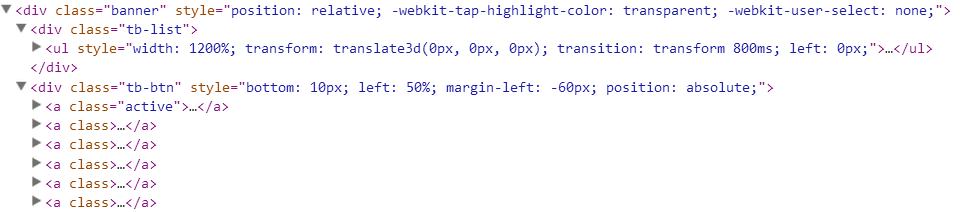
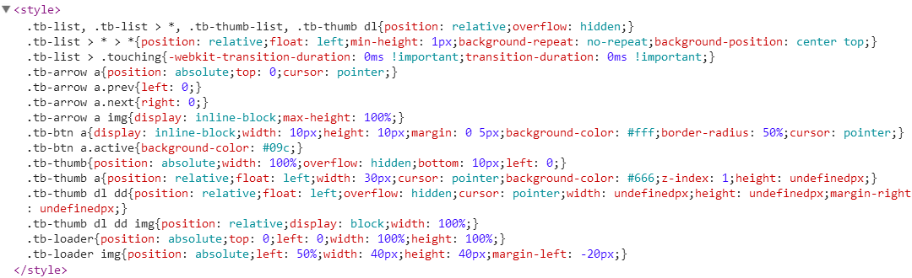

不同与大部分轮播插件的是，terseBanner删除了很多不实用或很少用的功能，只保留了常用的功能，可以绝大多数网站的需求


<style>
.banner{width: 960px;height: 540px;}
</style>
<div class="banner">
<ul>
<li><img src="img/banner-1.jpg"></li>
<li><img src="img/banner-2.jpg"></li>
<li><img src="img/banner-3.jpg"></li>
<li><img src="img/banner-4.jpg"></li>
<li><img src="img/banner-5.jpg"></li>
<li><img src="img/banner-6.jpg"></li>
</ul>
</div>
<script type="text/javascript" src="js/jquery-1.11.3.min.js"></script>
<script type="text/javascript" src="../src/jquery.terseBanner.js"></script>
<script>
$('.banner').terseBanner();
</script>
自动化
自动添加必须的DOM元素，显著简化原生代码
自动写入默认样式，减少排版复杂度
自定义样式
也可以使用自定义的样式来覆盖默认的样式（在默认样式的选择器前面再加一级）
#custom .tb-arrow a{width: 64px;height: 64px;margin: 0 20px;opacity: 0;-webkit-transition: all .3s;transition: all .3s;}
#custom .tb-arrow a.prev{background: url(img/icon-prev.png) no-repeat;}
#custom .tb-arrow a.next{background: url(img/icon-next.png) no-repeat;}
#custom:hover .tb-arrow a{opacity: 1;}
#custom .tb-btn{bottom: 0;height: 10px;}
#custom .tb-btn a{width: 160px;margin: 0;box-sizing: border-box;background: #666;border-right: 1px solid #fff;border-radius: 0;}
#custom .tb-btn a:last-child{border: none;}
#custom .tb-btn a.active{background: #f80;}
动画
4种动画方式：slide, fade, flash, none（flash模式是fade模式的简化，图片切换时可以出现闪烁的白色背景）
PS：slide模式不支持垂直方向的滑动
缩略图
自动截取原始图片的一部分作为缩略图，缩略图列表超出容器时自动添加左右箭头
$('#thumb').terseBanner({
btn: false,
thumb: {
width: 150,
height: 84,
gap: 4,
visible: 3
}
});
也可以手动设置每一张缩略图,在原始图片的地址后面加上 "?thumb=..."
<div class="banner" id="thumb">
<ul>
<li><img src="img/banner-1.jpg?thumb=img/thumb-1.png"></li>
<li><img src="img/banner-2.jpg?thumb=img/thumb-2.png"></li>
<li><img src="img/banner-3.jpg?thumb=img/thumb-3.png"></li>
<!-- ... -->
</ul>
</div>


方法
可以使用下面的方法，可以在自定义的事件中切换轮播图片
回调函数
3个回调函数:init, before, after, 可以传入的参数为